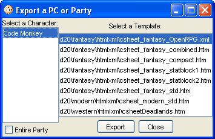

This option will export your characters to a "Standard" html or xml file.
The
Standard
selection opens up a pop up window
which prompts the user to select how to export open
characters.
On the left you can choose either one open character to export, or
check the "Entire party" checkbox to export all open
characters.
Then you select which Output Sheet template is to be used to export
the character on the right.
Once both have been selected, click the 'Export' button and PCGen
will export the character to a file in a folder chosen by the user
(PCGen's Character directory by default) using the name of the
character as a filename.
When finished press the 'Close' button.
For more information on the Standard Output Sheets, please see the Standard Sheets section